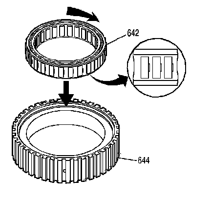
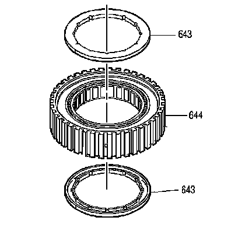
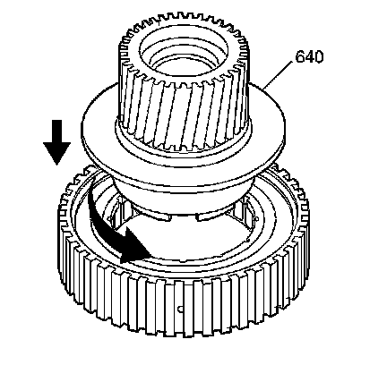
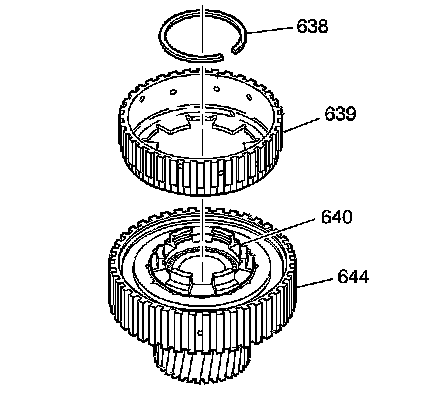
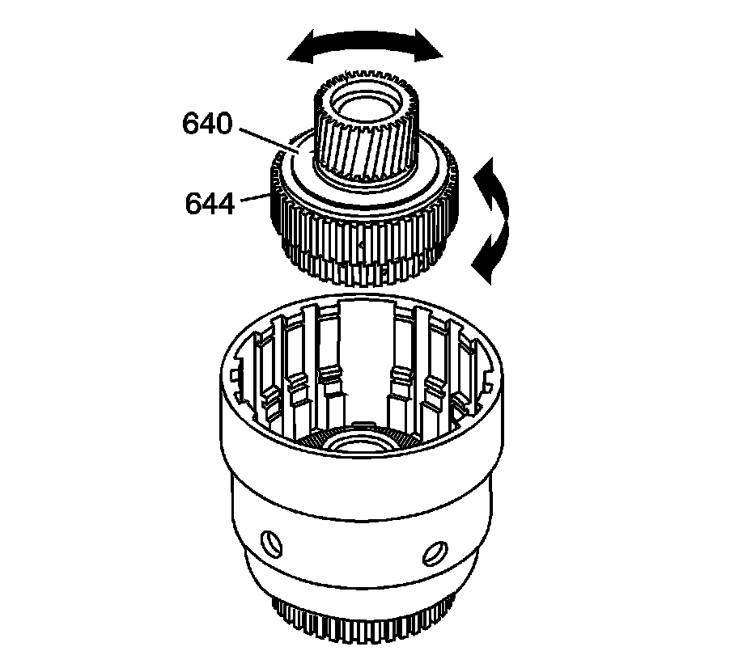

Forward Clutch Sprag Assemble
Forward Clutch Sprag Assemble

1. Inspect the forward sprag assembly (642) for the following conditions:
^ Wear or damage
^ Weak or broken springs
2. Inspect the forward clutch outer race (644) for the following conditions:
^ Race wear or damage
^ Spline wear
^ Surface finish damage
3. Install the forward sprag assembly (642) into the forward clutch outer race (644).

4. Inspect the sprag assembly retainer rings (643) for wear or damage.
5. Install the sprag assembly retainer rings (643) into the forward clutch sprag assembly (644).

6. Inspect the forward sprag clutch inner race and input sun gear assembly (640) for the following conditions:
^ Damaged spline or gear teeth
^ Ring groove damage
^ Surface finish damage
^ Loose retainer
^ Wear
^ Cracks
7. Install the forward sprag clutch inner race and input sun gear assembly (640) into the forward sprag and outer race assembly.

8. Inspect the overrun clutch hub (639) for the following conditions:
^ Spline damage
^ Plugged lubrication holes
^ Damaged tangs
^ Cracks
9. Install the overrun clutch hub (639) onto the sprag clutch inner race and input sun gear assembly (640).
10. Install the overrun clutch hub retaining snap ring (638).

Important: If the forward clutch sprag assembly operates backward, you have installed the sprag backward. Reassemble the sprag correctly.
11. Test the forward clutch sprag assembly for proper operation.
1. Position the forward clutch sprag assembly with the input sun gear facing up.
Important: The sun gear should only rotate in a counterclockwise direction.
2. Hold the forward sprag clutch outer race (644) with one hand and rotate the input sun gear (640) with the other hand.
12. Install the forward clutch sprag and input sun gear assembly into the input clutch housing.
13. Index the overrun clutch hub into the overrun clutch plates.